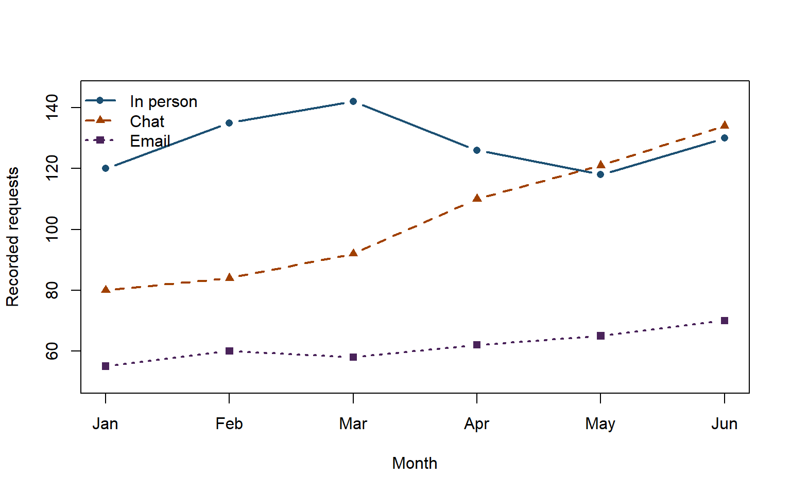

flowchart LR
Q["Frame question, users, decision, and harms"] --> S["Assess sources, provenance, authority, and consent"]
S --> P["Profile structure, quality, missingness, and bias"]
P --> T["Transform reproducibly while preserving source"]
T --> A["Analyze with appropriate denominators and uncertainty"]
A --> C["Communicate accessible evidence and limitations"]
C --> D["Decide, document, and implement proportionately"]
D --> E["Evaluate outcomes and unintended effects"]
E --> Q
12 Data Literacy and Capstone Integration
12.1 Chapter overview
A library director asks whether extending evening hours improved student access. The dashboard shows a 35% increase in door counts after the change. The result sounds decisive, but comparison weeks included examinations, the counter recorded staff and repeat entries, one entrance was closed during the earlier period, and no data describe students who could not travel safely at night. The number is real; the conclusion remains uncertain.
The central problem of this chapter is how to turn data into responsible evidence for information-service decisions without mistaking measurement for reality or correlation for explanation. Data literacy involves more than calculating averages or producing charts. It includes framing questions, understanding provenance, examining structure and quality, protecting people, choosing methods, interpreting uncertainty, communicating limitations, and deciding what evidence can and cannot support.
For LIS professionals, data are also objects of stewardship. Libraries help communities find, understand, evaluate, document, preserve, and reuse research, government, cultural, bibliographic, and operational data. Metadata determines whether a dataset can be interpreted. Infrastructure determines whether it can be accessed. Ethics and law shape collection and reuse. Preservation maintains continuity. UX determines whether evidence is intelligible and accessible.
This final chapter integrates the course. Students use R and Quarto to inspect a synthetic service dataset, calculate transparent descriptive measures, create an accessible visualization, and use evidence to refine a capstone. The capstone is not a technology demonstration. It is a defensible LIS intervention connecting users, metadata, data structures, technical implementation, access, ethics, security, preservation, evaluation, sustainability, and communication.
12.2 Learning objectives
After completing this chapter, you should be able to:
- Formulate an answerable service question with defined population, unit, measure, comparison, context, and decision.
- Assess a dataset for provenance, scope, completeness, validity, consistency, timeliness, uniqueness, bias, and fitness for use.
- Produce a reproducible descriptive analysis and accessible table and visualization in R and Quarto.
- Interpret counts, percentages, rates, central tendency, variation, missingness, and associations without overstating causation or generalizability.
- Integrate technical, metadata, UX, legal, ethical, security, preservation, evaluation, and sustainability requirements in a capstone.
- Present and defend evidence, design choices, limitations, and next actions to technical and nontechnical stakeholders.
12.3 Key concepts
Table 12.1 defines the chapter vocabulary. Many terms describe judgments rather than properties that data possess automatically.
| Term | Working definition |
|---|---|
| Data literacy | The ability to find, understand, evaluate, manage, analyze, communicate, and ethically use data. |
| Dataset | An organized collection of related data and documentation. |
| Observation | One recorded case, event, entity, period, or measurement. |
| Variable | A characteristic recorded or derived for observations. |
| Unit of analysis | The entity or event about which analysis makes statements. |
| Population | The complete group or set relevant to a question. |
| Sample | A subset observed or selected from a population. |
| Provenance | Evidence about data origin, custody, methods, transformations, ownership, and history. |
| Data dictionary | Documentation of fields, meanings, types, allowed values, units, sources, and missing codes. |
| Data quality | The degree to which data characteristics are fit for a stated use. |
| Completeness | The extent to which required observations and values are present. |
| Validity | The extent to which values conform to defined rules and acceptable domains. |
| Accuracy | The closeness of a value to the relevant real-world state or authoritative source. |
| Consistency | The absence of unjustified contradictions within and across records or systems. |
| Uniqueness | The extent to which each entity or event is represented without unintended duplication. |
| Timeliness | The extent to which data are current enough for the stated decision. |
| Missingness | The pattern and meaning of absent, withheld, unknown, inapplicable, or unrecorded values. |
| Bias | Systematic distortion introduced through collection, representation, selection, measurement, or interpretation. |
| Denominator | The quantity against which a count is compared when forming a fraction, rate, or percentage. |
| Count | The number of observed items or events satisfying a definition. |
| Rate | A count relative to population, opportunity, exposure, or time. |
| Percentage | A fraction expressed per hundred. |
| Mean | The arithmetic average, sensitive to extreme values. |
| Median | The middle ordered value, often more resistant to extremes. |
| Distribution | The pattern of values, including center, spread, shape, and unusual observations. |
| Outlier | An observation unusually distant or different under stated criteria; not automatically an error. |
| Aggregation | Combining observations into summaries, which can protect privacy but hide variation. |
| Disaggregation | Separating summaries by relevant groups or contexts to reveal differences, subject to privacy and sample size. |
| Correlation | A statistical or observed association between variables. |
| Causation | A relationship in which change in one factor produces change in another under defensible assumptions and evidence. |
| Inference | Reasoning from observed data to broader conclusions. |
| Uncertainty | Limits on knowledge arising from sampling, measurement, missingness, assumptions, variation, and change. |
| Visualization | A purposeful visual representation of data supporting comparison, pattern recognition, or explanation. |
| Dashboard | A monitored display of selected indicators; not a substitute for interpretation or governance. |
| Reproducibility | The ability to obtain consistent results from documented data, code, software, and procedures. |
| FAIR principles | Principles that data should be findable, accessible under stated conditions, interoperable, and reusable. |
| Metric | A defined quantitative measure. |
| Indicator | A measure interpreted as evidence about progress or condition. |
| Baseline | A documented starting measurement used for comparison. |
| Target | A desired level or condition tied to a time and rationale. |
| Theory of change | An explicit account connecting activities, outputs, outcomes, assumptions, and context. |
| Evaluation | Systematic assessment of design, implementation, outcomes, value, or impact. |
| Triangulation | Use of multiple methods, sources, or perspectives to examine a claim. |
| Capstone | A culminating project demonstrating integrated knowledge through an evidence-based LIS artifact. |
| Acceptance criterion | A testable condition that a deliverable must meet before approval. |
12.4 Core discussion
12.4.1 Data are made, not found untouched
Data do not simply mirror the world. People and systems decide what to count, which categories to use, when observation begins and ends, how missing values are represented, and which records are retained. A door counter records crossings, not unique visitors or learning. A download log records requests, not reading or understanding. A satisfaction survey records responses from people who encountered and chose to answer it, not everyone affected by the service.
Data literacy therefore begins with provenance and production. Ask:
- Who created the data and for which purpose?
- What is the unit of analysis?
- Which population is represented, and who is absent?
- How were variables defined and measured?
- Which systems, versions, settings, and workflows produced values?
- Which cleaning, matching, aggregation, or suppression occurred?
- Which rights, licenses, privacy rules, and community protocols apply?
- What changed during the period?
Metadata is central. A CSV without field definitions, units, missing codes, dates, and provenance may be technically readable but analytically unsafe.
12.4.2 From a broad concern to an answerable question
“Are students using the library?” is too broad. An answerable question specifies:
- population: which students or service users;
- unit: visit, person, transaction, request, session, or item;
- measure: count, rate, completion, wait time, relevance, or experience;
- comparison: before/after, branch, channel, or target;
- period: dates and relevant cycles;
- context: examinations, closures, policy, staffing, or platform change;
- decision: what action the evidence will inform.
A stronger question is: “During four comparable non-examination weeks, did extending weekday closing from 18:00 to 20:00 increase completed in-person reference consultations among enrolled evening-program students, without increasing average wait time above ten minutes?”
The question still needs ethical review and feasible measurement. It should not lead the library to track individual movements unnecessarily.
12.4.3 A data-to-decision workflow
As Figure 12.1 shows, analysis is one stage. A precise calculation cannot repair an ill-defined question or biased source.
12.4.4 Provenance and fitness for use
Provenance connects data to origin and transformations. For a circulation export, record system, query, filters, date, operator, software version, timezone, exclusions, identifiers, and de-identification. For survey data, record instrument, recruitment, consent, response period, translations, skip logic, and cleaning.
Fitness for use is contextual. A dataset can be accurate for billing and unsuitable for evaluating equitable access. Door counts may support facilities planning and not unique-user demographics. Discovery logs may support broken-link detection and be disproportionate for tracking individual research interests.
FAIR principles encourage data to be findable, accessible under clear conditions, interoperable, and reusable (Wilkinson et al. 2016). FAIR does not mean open without restriction. Sensitive or culturally governed data can be well documented and responsibly accessible under controls.
12.4.5 Data quality as dimensions
Table 12.2 connects quality dimensions to library examples.
| Dimension | Question | LIS example |
|---|---|---|
| Completeness | Are required observations and values present? | Language and rights missing from repository records |
| Validity | Do values follow declared rules? | Impossible date or unrecognized status code |
| Accuracy | Do values correspond to an authoritative or observed state? | Catalogue says available while item is missing |
| Consistency | Do equivalent facts agree across records and systems? | One branch uses Filipino labels and another unexplained abbreviations |
| Uniqueness | Are entities or events duplicated unintentionally? | Same request counted twice after system retry |
| Timeliness | Are values current enough for this decision? | Old hours remain in a mobile app cache |
| Provenance | Can origin and transformations be reconstructed? | Cleaned CSV lacks source export date and rule log |
| Representativeness | Whose experiences and contexts are captured or absent? | Online survey excludes users with limited connectivity |
As Table 12.2 shows, quality is more than blank-cell counts. Metadata quality research similarly treats completeness, accuracy, consistency, and conformance as distinct concerns (Park 2009).
12.4.6 Missingness carries meaning
Missing values may mean not recorded, unknown, not applicable, withheld, refused, system error, or suppressed for privacy. Replacing every missing value with zero changes meaning. Dropping incomplete rows can systematically remove people who face the greatest barriers.
Profile missingness by variable, period, channel, and relevant group while protecting privacy. Ask whether missingness is connected to the outcome. A mobile form that fails on slow connections may produce missing satisfaction responses precisely among users with poor experiences.
Document decisions:
- retain as missing and report it;
- recover from an authoritative source;
- correct a known system error;
- create an explicit category such as
not_applicablewhen justified; - suppress small groups to protect people;
- exclude observations with a reason and sensitivity check.
12.4.7 Tidy structure and reproducible transformations
Tidy data generally place variables in columns and observations in rows, supporting transparent transformation (Wickham 2014). This does not replace relational or graph models, but it helps analysis.
A reproducible workflow preserves raw input, creates cleaned output, records rules, and generates tables and charts from code. Quarto combines code, narrative, results, citations, and limitations (Posit 2026). Reproducibility requires data and environment documentation, not merely sharing code (Sandve et al. 2013; National Academies of Sciences, Engineering, and Medicine 2019).
12.4.8 A synthetic service dataset
The following synthetic dataset contains monthly reference requests. It represents no real people and is created inside the chapter.
The data include counts, completion, median waits, and chat outages. They do not include patron identities, question topics, satisfaction, answer quality, staffing, repeat users, or reasons for incomplete requests. These limitations constrain interpretation.
12.4.9 Counts, denominators, and rates
A count answers “how many recorded events?” A rate compares a count with opportunity, population, exposure, or time. A completion percentage needs a denominator:
\[ \text{Completion rate} = \frac{\text{completed requests}}{\text{recorded requests}} \times 100 \]
If “completed” means staff closed a ticket rather than the user obtained useful information, the rate measures workflow closure, not success. Definitions matter as much as formulas.
Aggregating the synthetic data by channel:
| Channel | Requests | Completed | Completion rate |
|---|---|---|---|
| Chat | 621 | 556 | 89.5% |
| 370 | 331 | 89.5% | |
| In person | 771 | 710 | 92.1% |
Table 12.3 shows recorded volume and completion. Email’s long wait time is not visible in this table, so it should not support a claim about overall service quality.
12.4.10 Mean, median, and distributions
The mean uses every value and is sensitive to extremes. The median is the middle ordered value and often describes skewed wait times more robustly. Neither tells the whole distribution.
If five waits are 2, 3, 4, 5, and 60 minutes, the mean is 14.8 and median is 4. Both are correct; each answers a different descriptive question. Report sample size, spread or ranges when useful, and the unit. Avoid selecting the statistic that makes performance appear best.
An outlier may be an error, rare event, or important case. Investigate before removing it. A 300-minute wait may reveal an outage or an unserved accessibility request.
12.4.11 Aggregation and disaggregation
Aggregates help summarize and protect privacy, but they can hide unequal outcomes. Overall completion may rise while one channel or language declines. Disaggregation can reveal barriers but can expose people when groups are small.
Before publishing subgroup data, assess purpose, consent or authority, sample size, re-identification, stigmatization, and whether communities can interpret and respond. Suppression and category combination reduce risk but may erase small populations. There is no purely technical solution; involve affected groups and privacy expertise.
12.4.12 Association is not causation
If chat requests rise after mobile redesign, the redesign may have contributed. Other explanations include examinations, promotion, staffing, outage recovery, or changing user populations. A before-after comparison without a credible counterfactual cannot isolate cause.
Use careful language:
- evidence supports: “Recorded chat requests increased after launch.”
- requires stronger design: “The redesign caused more students to obtain help.”
Triangulate analytics with usability tests, interviews, accessibility review, support logs, and operational changes. Quantitative patterns show where to ask; qualitative evidence helps explain how and why.
12.4.13 Accessible and honest visualization
A visualization should support a specific comparison. Bar charts compare categories; line charts show ordered change over time; scatterplots show relationships; tables support exact lookup. Avoid three-dimensional effects, decorative clutter, truncated axes that exaggerate small differences, and color-only encoding.
The line chart in Figure 12.2 uses labels, distinguishable line types and points, a descriptive caption, and an accompanying table in the source data.

As Figure 12.2 shows, chat volume rises while in-person volume fluctuates. The caption explicitly limits the claim. Complex charts need text alternatives and often a data table or longer description (World Wide Web Consortium 2026). Government visualization guidance likewise emphasizes chart selection, labeling, scales, and accessibility (UK Government Analysis Function 2026).
12.4.14 Dashboards and metric governance
A dashboard selects what receives attention. Metrics should have owners, definitions, sources, refresh schedules, thresholds, privacy rules, and review dates. A green indicator can conceal harm if the target is poorly chosen.
Avoid vanity metrics such as total page views without a decision. A useful metric connects to service value and can prompt action. Even then, monitor balancing measures. Faster reference closure may reduce answer quality; more repository deposits may increase inaccessible files; higher discovery clicks may increase broken-link frustration.
Table 12.4 defines a compact metric record.
| Field | Example question |
|---|---|
| Decision | Which decision will this evidence inform? |
| Construct | What concept is the metric intended to represent? |
| Operational definition | Exactly which events and exclusions count? |
| Numerator | What observed successes or events are counted? |
| Denominator | Relative to which population, opportunity, exposure, or time? |
| Source and provenance | Which system, query, dates, and transformations produce it? |
| Frequency | How often is a decision genuinely needed? |
| Disaggregation | Which groups or contexts matter, and when are counts too small? |
| Quality checks | Which validity, duplicate, missingness, and drift checks apply? |
| Privacy controls | Which fields are removed, aggregated, restricted, or deleted? |
| Balancing measure | Which measure detects harmful optimization? |
| Owner and action threshold | Who reviews it, and what evidence triggers action? |
| Retirement rule | When will the metric stop because it no longer serves the question? |
As Table 12.4 indicates, a metric is a governed information product, not a number that appears automatically.
12.4.15 Theory of change and evaluation
A theory of change connects resources and activities to outputs, outcomes, assumptions, and context.
flowchart LR
N["Need: mobile users abandon help"] --> A["Activities: simplify form, improve accessibility, preserve interrupted input"]
A --> O["Outputs: tested mobile workflow, staff guide, monitoring"]
O --> S["Short outcome: more users complete requests with less effort"]
S --> L["Long outcome: more equitable access to credible assistance"]
X["Assumptions: staffing, connectivity, awareness, trust"] --> S
C["Context: exams, outages, policy, language"] --> S
As Figure 12.3 shows, activities do not guarantee outcomes. Evaluation should test assumptions and unintended effects.
Evaluation questions can examine:
- design: Is the intervention grounded in evidence and values?
- implementation: Was it delivered as intended, to whom, and with what adaptations?
- outcome: What changed for users, services, and equity?
- efficiency: What resources produced which outputs or outcomes?
- sustainability: Can benefits and controls continue?
- unintended effects: Who was burdened, excluded, surveilled, or displaced?
12.4.16 Communicating uncertainty and limitations
Every analysis should state:
- data source, period, and unit;
- inclusion and exclusion rules;
- missingness and quality issues;
- transformations and assumptions;
- whether data are a sample or full recorded set;
- relevant external changes;
- which claims are descriptive, associative, or causal;
- privacy suppression and its effects;
- populations and experiences not represented;
- what further evidence is needed.
Limitations do not invalidate responsible analysis. They define its boundary. Hiding limitations produces brittle decisions and weak trust.
12.5 Philippine and Southeast Asian examples
12.5.1 Academic library: database use and course cycles
A university library compares database sessions across colleges. Raw counts favor large colleges, so analysts calculate sessions relative to enrolled students and course periods. They do not equate sessions with learning. Interviews reveal that some programs rely on open resources and shared devices, while off-campus authentication failures suppress recorded use.
12.5.2 Public library: program attendance and reach
A city library reports event attendance, but repeat attendees and walk-ins make unique reach uncertain. Registration data are minimized, and small barangay counts are not publicly disaggregated when individuals could be inferred. Staff combine counts with participant feedback and community-partner observations.
12.5.3 School library: reading program outcomes
A school sees higher circulation after a reading campaign. It avoids claiming that circulation caused literacy improvement. Teachers, learners, and librarians examine reading choice, accessibility, language, comprehension, and availability. The library monitors whether competition discourages slower readers or encourages superficial borrowing.
12.5.4 Government information portal: denominators and outages
A government portal reports rising downloads. Analysts compare page availability, internet disruptions, document publication volume, device type, and population served. An outage can reduce both numerator and denominator opportunities. Accessible offline and assisted channels remain part of service assessment.
12.5.5 Regional cultural heritage dataset
A Southeast Asian aggregator maps collection coverage by country and object type. Large digitization grants create visible clusters, while community collections with limited infrastructure appear absent. The visualization labels this as portal coverage, not regional cultural production. Source institutions retain provenance, and missingness becomes a funding question rather than a claim that heritage does not exist.
Reflect: Identify one number your institution regularly reports. What is its unit, denominator, production process, missing population, and likely misuse?
12.6 Hands-on activity: Analyze service data and refine a capstone
12.6.1 Purpose
Use R and Quarto to profile a small synthetic or properly anonymized service dataset, create one output-aware table and accessible visualization, write a bounded interpretation, and use the findings to improve a capstone proposal.
12.6.2 Tools
- R and Quarto;
- base R or
readr,dplyr, andggplot2if approved; - an instructor-provided synthetic dataset with data dictionary;
- the analysis-plan fields in Table 12.5.
| Field | Required statement |
|---|---|
| Service question | One answerable question rather than a broad topic |
| Decision and audience | Who will decide what based on the evidence? |
| Unit and population | What is one row, and to which population might the claim apply? |
| Period and context | Which dates and external events matter? |
| Variables and definitions | What does each field mean, including missing codes? |
| Provenance | Who produced the data, how, and through which transformations? |
| Quality checks | Which completeness, validity, duplicates, consistency, and timeliness checks apply? |
| Privacy and ethics | Which data are necessary, restricted, aggregated, or excluded? |
| Measures and denominators | Which calculations answer the question and why? |
| Visualization | Which visual comparison is needed, with text alternative and data access? |
| Limitations | What can the evidence not establish? |
| Reproducibility | Which files, code, software, and steps allow rerunning? |
| Capstone implication | Which requirement, risk, design, or evaluation decision changes? |
Table 12.5 turns analysis into a documented professional decision process.
12.6.3 Steps
- Write the service question, decision, audience, unit, population, period, comparison, and likely harms from misuse.
- Read the data dictionary and provenance note before opening the values. Record collection purpose and limitations.
- Preserve the source file. Import explicit types and keep a run record.
- Inspect dimensions, names, types, ranges, categories, duplicates, missingness, and impossible values.
- Produce a quality report with counts and examples. Do not silently correct uncertain values.
- Create a cleaned analytical dataset and log every transformation and exclusion.
- Calculate no more than five measures directly tied to the question. Show numerator and denominator for every percentage or rate.
- Create one output-aware table and one accessible chart. Use a descriptive title or caption, direct labels where feasible, non-color cues, sensible scales, and alternative text.
- Write three evidence statements, each followed by a limitation or alternative explanation.
- Add one qualitative or operational evidence source that would strengthen interpretation.
- State a proportionate service recommendation, an evaluation measure, a balancing measure, and a stop or review condition.
- Revise the capstone proposal using the findings. Identify one requirement added, removed, or changed.
- Render the
.qmdand ask a peer to reproduce one result from the source data and code.
12.6.4 Expected output
Submit:
- analysis plan and data dictionary;
- source-preservation and transformation log;
- quality and missingness report;
- cleaned analytical data;
- executable
.qmdand rendered HTML or DOCX; - one referenced table and one accessible visualization;
- limitations and ethical-use statement;
- service recommendation with evaluation and balancing measures;
- revised capstone proposal; and
- a 200-word reflection: Which conclusion became less certain, and more useful, after examining how the data were produced?
12.6.5 Activity checklist
12.6.6 Assessment rubric
Table 12.6 rewards question quality and interpretation as much as calculation.
| Criterion | Weight | Strong performance |
|---|---|---|
| Question and provenance | 20% | Question, decision, unit, population, scope, source, and production context are precise |
| Quality and reproducibility | 20% | Source is protected; checks, transformations, code, and environment are documented |
| Analysis and visualization | 25% | Measures answer the question; denominators, table, chart, accessibility, and labels are correct |
| Interpretation and ethics | 20% | Claims, uncertainty, missingness, bias, privacy, alternatives, and limitations are candid |
| Capstone integration | 15% | Evidence produces a defensible change to requirements, evaluation, risk, or sustainability |
12.7 Capstone integration
The capstone accounts for 25% of the course grade. It demonstrates that ICT in LIS is service infrastructure rather than isolated software operation. Every capstone must identify a real information problem, produce a bounded artifact, test it, document decisions, and plan for responsible maintenance or closure.
12.7.2 Capstone options
Table 12.7 describes six pathways. Teams should choose the smallest scope that permits complete integration.
| Option | Core artifact | Required integration | Boundary example |
|---|---|---|---|
| Campus digital exhibit | Three-to-five item interpretive exhibit | Selection, description, provenance, rights, accessibility, preservation | Prototype, not an institution-wide portal |
| API-powered subject guide | Reviewed guide generated from a bounded API workflow | API terms, identifiers, transformation, attribution, review, fallback | Twenty candidates and five published entries |
| Discovery improvement study | Task evidence, retrieval analysis, and prioritized redesign | Corpus, metadata, ranking, UX, access resolution, privacy | One task and one bounded system scope |
| Small repository policy pack | Coherent policies, roles, workflows, and templates | Deposit, metadata, rights, security, preservation, governance, exit | One small collection type and institutional context |
| Metadata cleanup and enrichment | Source-preserving cleanup script, records, exceptions, and audit | Quality rules, authority work, automation, tests, rollback, identity ethics | No more than 100 synthetic or approved records |
| Mobile service redesign | Tested mobile flow or accessible prototype | User research, information architecture, WCAG, privacy, low bandwidth, evaluation | One critical journey, not a complete app |
As Table 12.7 shows, each option is intentionally small. Depth, evidence, and maintainability matter more than feature count.
12.7.3 Capstone pathway 1: Campus digital exhibit
Select a coherent topic and three to five objects. Produce collection and interpretive statements, structured item metadata, provenance, rights and sensitivity review, alt text or transcripts, responsive exhibit pages, preservation package, and evaluation with representative tasks. Do not treat exhibit captions as substitutes for durable object records.
12.7.4 Capstone pathway 2: API-powered subject guide
Define audience and selection criteria, document API terms, save permitted raw responses, transform and validate data reproducibly, retain identifiers and attribution, review every published entry, design accessible output, handle outages, and define refresh and exit. The guide must add professional selection and context rather than republish results automatically.
12.7.5 Capstone pathway 3: Discovery improvement study
Select one information need and system boundary. Analyze corpus claims, metadata, search behavior, ranking, facets, access resolution, mobile UX, and accessibility. Use relevance judgments and task evidence to recommend changes with owners and verification. Do not claim system-wide findings from one query.
12.7.6 Capstone pathway 4: Small repository policy pack
Define one collection type and institutional context. Produce collection scope, deposit agreement, metadata profile, roles, access and embargo policy, rights and takedown workflow, privacy and security controls, preservation plan, incident procedure, service levels, review schedule, and exit plan. Policies must form one coherent operating model.
12.7.7 Capstone pathway 5: Metadata cleanup and enrichment
Use synthetic or approved data. Preserve source values, define quality and authority rules, write reproducible transformations, produce exception reports, test multilingual and missing cases, document enrichment provenance, assess identity harm, and prepare rollback. Avoid automatically merging people or replacing community labels without authority.
12.7.8 Capstone pathway 6: Mobile service redesign
Choose one critical task. Conduct ethical user and accessibility research, map the journey and information architecture, prototype responsive behavior, test keyboard and assistive-technology essentials, address low bandwidth and interruption, minimize personal data, and define performance and success measures. The deliverable includes behavior notes, not only screens.
12.7.9 Common capstone rubric
Table 12.8 makes integration visible. A technically impressive artifact cannot compensate for harmful data practices or unusable design.
| Criterion | Weight | Strong performance |
|---|---|---|
| Service problem and users | 15% | Need, stakeholders, scope, exclusions, and outcomes are specific and evidence based |
| Metadata and data quality | 20% | Entities, identifiers, structures, values, provenance, and quality controls are coherent |
| Technical implementation | 20% | Artifact works reliably within scope; dependencies, tests, failures, and limitations are documented |
| Ethics, rights, privacy, security, and accessibility | 15% | Concrete design and governance choices address risk, access, law, bias, and accountability |
| Evaluation and evidence | 15% | Acceptance criteria, methods, findings, balancing measures, and claims support defensible judgment |
| Documentation, stewardship, sustainability, and communication | 15% | Another team could understand, operate, maintain, preserve, evaluate, and retire the work |
12.7.10 Milestones and review gates
Capstone development should use gates rather than wait for a final demonstration:
- Gate 1, proposal: service problem, users, evidence, scope, exclusions, option, roles, and risks approved.
- Gate 2, design: data and metadata model, UX task, rights/privacy/security/preservation plan, and acceptance criteria approved.
- Gate 3, working draft: artifact functions with sample data; tests, exceptions, accessibility, and documentation reviewed.
- Gate 4, evaluation: user or expert evidence collected ethically; findings and revisions documented.
- Gate 5, final acceptance: artifact, source, report, preservation package, presentation, and individual reflections complete.
At each gate, the team may proceed, proceed with conditions, revise, reduce scope, or stop. Scope reduction is often evidence of good judgment.
12.7.11 Capstone presentation
A ten-minute presentation should answer:
- What service problem and users did you address?
- What did you build, test, or govern?
- How do metadata and data structures support it?
- What evidence changed your design?
- Which ethical, legal, accessibility, security, or preservation risk mattered most?
- What works now, what remains uncertain, and what should happen next?
The demonstration must have an offline fallback, accessible slides or page, readable labels, and no live personal data or credentials. A failed live API should not erase the evidence of the project.
12.7.12 Individual reflection
Each student submits a reflection identifying contribution, one decision they influenced, one error or assumption revised, evidence of learning across at least three course areas, and a future professional-development need. The reflection should distinguish team achievement from individual work without blaming peers.
12.9 Review questions
- Identification: Distinguish observation, variable, unit of analysis, population, and sample.
- Identification: What is a denominator, and why must it be visible when reporting a rate?
- Short answer: Explain why missing data should not automatically be replaced with zero or removed.
- Short answer: How do provenance and a data dictionary support reproducibility and interpretation?
- Applied statistics: Five reference waits are 2, 3, 4, 5, and 60 minutes. Calculate mean and median and explain which claims each supports.
- Applied visualization: A chart begins its vertical axis at 98% to compare completion rates of 99% and 100%. What impression might it create, and how would you redesign it?
- Scenario: Repository downloads doubled after a publicity campaign and platform migration. Why can the library not attribute the change to publicity alone?
- Scenario: Disaggregated results show only two respondents in a sensitive category. What privacy, interpretation, and reporting options should be considered?
- Scenario: A capstone prototype works but has no metadata profile, accessibility test, maintenance owner, or exit plan. Apply the common rubric.
- Critical analysis: When should an institution decide not to create a metric or dashboard?
12.10 Mini case: The dashboard that proved success
Silangan University Library launches a dashboard claiming that its digital transformation improved equitable access. It shows increased repository deposits, website visits, database sessions, and chat requests. The dashboard does not show that one college mandated repository deposit, bots inflated visits, authentication changes split sessions, chat outages created repeat requests, and accessibility complaints rose. No denominator accounts for enrollment, and students without reliable connectivity are absent. An AI-generated summary states that the redesign “caused a 42% improvement in student engagement.” The dashboard is scheduled for presentation to the governing board.
12.10.1 Guide questions
- Which provenance, definition, quality, denominator, bias, accessibility, and causal-inference problems undermine the claim?
- Redesign the evidence package using transparent metrics, balancing measures, qualitative evidence, limitations, and privacy safeguards.
- What should the presenters say now, which decisions can reasonably proceed, and which claims require retraction or further study?
12.11 Further reading and tools
12.11.1 Readings and standards
- R for Data Science. Open guidance on importing, transforming, visualizing, and communicating data (Wickham et al. 2023).
- Tidy Data. A foundational article on consistent analytical structure (Wickham 2014).
- FAIR Guiding Principles. Principles for findable, accessible, interoperable, and reusable research data (Wilkinson et al. 2016).
- Data information literacy research. Evidence that data management and interpretation require integrated competencies (Carlson et al. 2011).
- Reproducibility guidance. Practices connecting claims to data, code, environments, and documented methods (Sandve et al. 2013; National Academies of Sciences, Engineering, and Medicine 2019).
- Accessible chart guidance. W3C guidance for complex-image alternatives and public-sector chart design (World Wide Web Consortium 2026; UK Government Analysis Function 2026).
- Philippine data-protection sources. Primary principles for lawful, proportionate, and secure personal-data use (Republic of the Philippines 2012; National Privacy Commission 2023).
12.11.2 Open or widely accessible tools
- R and Quarto: reproducible analysis, tables, charts, narrative, and multi-format publication (R Core Team 2026; Posit 2026).
- readr and dplyr: explicit import and transformation workflows (Tidyverse Team 2026b, 2026a).
- OpenRefine: visual profiling and cleaning with transformation history.
- Data dictionaries and README files: simple, essential documentation for meaning and provenance.
- Git: version control for code and documentation; do not commit restricted data or secrets.
- Privacy-preserving synthetic data: useful for teaching and interface tests when real records are unnecessary.
12.11.3 Closing synthesis
Data literacy is the capacity to make responsible claims, not merely to calculate. It requires good questions, provenance, metadata, quality assessment, reproducible transformation, appropriate measures, accessible communication, uncertainty, privacy, and professional judgment. Evidence becomes useful when its limits are visible.
The capstone brings the book’s central argument into practice: ICT is the infrastructure through which information organizations describe, retrieve, deliver, preserve, protect, govern, and improve services. A successful LIS technology project is therefore not the artifact with the most features. It is the one that can answer: Whose information need is served, how is meaning structured, what evidence supports the design, which risks and exclusions remain, who is accountable, and how can the service be maintained, evaluated, corrected, or ended responsibly?